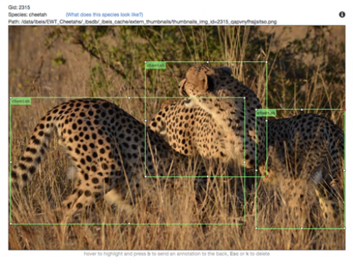
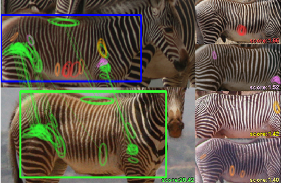

Image Analysis Pipeline#
As technology advances, video and photography equipment are improving in quality, availability, and affordability. Wildlife photography is very popular and there is an abundance of animal images available online. These images have the potential to become critical wildlife data sources. If lots of wildlife images could be easily obtained and combined with metadata (location, date, and behavior), then ecologists could use this information to predict and prevent animal population declines.
Regarding this concept, Codex uses a sophisticated machine learning (ML) server called Wildbook Image Analysis (WBIA). This server uses a detection pipeline to find animals in photographs. Once an animal has been detected, it is then directed to a specific identification (ID) algorithm that will identify the individual animal. Relying on manual data processing, such as matching photos by eye, can be slow and inaccurate. WIBA focuses on using technology to process data, which improves both speed and precision.
This is beneficial for users contributing images to Codex. This combination of artificial intelligence and citizen science is vital for discovering new ways to fight extinction.
Here is a link to a poster presentation summarizing some stages of the WBIA’s detection pipeline.
Detection#
The detection pipeline is a cascade of deep convolutional neural networks (DCNNs). The combined outcomes of each neural network results in an analyzed image. Based on this information, the image can then be routed to its appropriate ID algorithm. The detection stage involves:
Finding animals in the image and individually outlining them in bounding boxes called Annotations.
Identifying and labeling the species on each Annotation.
Adding viewpoint labels on each Annotation.
There are also optional features that WIBA can provide for each image:
The background of each Annotation can be removed to get rid of as many non-animal pixels as possible.
Images can be rotated in order to standardize the angle of the Annotations. This will maximize their comparability in the ID algorithms.
With some species, such as manta rays and hammerhead sharks, accurately detecting orientation can be difficult. Orientation networks are important for detecting the correct rotation, otherwise the precision of downstream processes will be inhibited.
In addition to the whole animal Annotation, smaller annotations can be added to identify specific parts of an animal (e.g., a fin or a tail).
The detector can produce a number of Annotations for whole individuals and specific body parts. With some species, such as wild dogs, it can be difficult to tell which tail belongs to which dog. The Assigner network analyzes certain features in the photo and assigns a score to the part (tail) and body (dog). A high score reflects high confidence they belong to the same animal.

Resulting bounding boxes (Annotations) predicted by WBIA’s detection pipeline after running a photo of three cheetahs.
FAQ#
Can WBIA detect and label any species?#
WBIA is not programmed to detect every single species. Detection relies on pre-trained ML models. Each model is trained for one or more specific species. WBIA provides the tools to create ML models. They must be created prior to using WBIA for species detection in Codex.
What does manual Annotation look like for ML training for a detector for a new species?#
Here is a link to an example training video for annotation for a new species.
What happens if detection doesn’t find one or more animals in the photo?#
Even machine learning makes mistakes. Codex allows users to manually Annotate the photo if detection doesn’t find an animal.
I am a software developer of ML engineer. How can I learn more about WBIA?#
Here is a link to Wildbook Image Analysis Overview.
Identification#
Identification is the next step after detection. It assigns a name (ID) to each Annotation (animal) from the detection stage. Different types of detection are used for different species and different body parts. Depending on the type of detection, the Codex pipeline directs the Annotation to one or more suitable ID algorithms. It compares the new Annotation to a database. By looking at specific features, it can identify if the Annotation is surrounding an individual we have never seen before, or if they have previously been recorded.
Hotspotter#
Hotspotter analyzes the textures in an image to find distinct patterns, known as “hot spots”. It then matches these hot spots against other images in the database. A ranked list of potential matches is produced, and the most likely matches have the highest hot spot similarity.

Hotspotter paper link: http://cs.rpi.edu/hotspotter/crall-hotspotter-wacv-2013.pdf